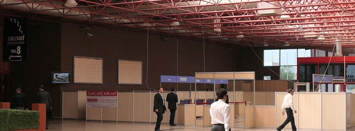
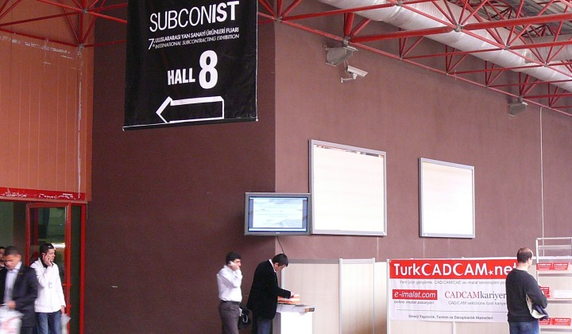
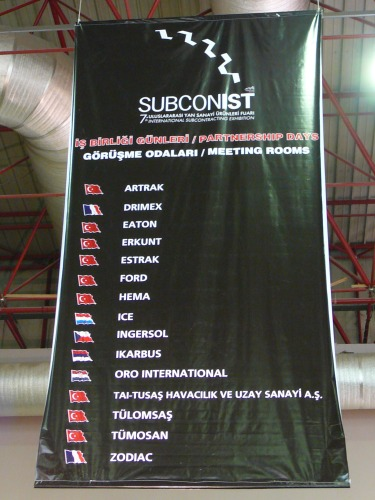
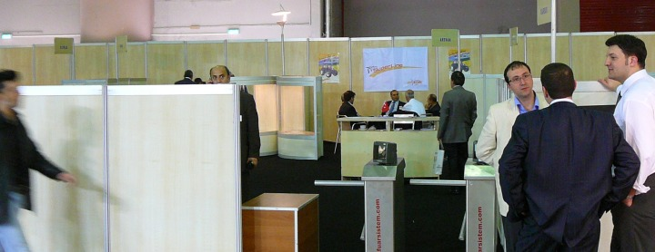

|
Türkiye'nin ilk ve tek endüstriyel yan sanayi fuarý olan SUBCONIST 2008, geniþletilmiþ kapsamý ile ana ve yan sanayi sektörlerini bir araya getirmenin yaný sýra tüm sanayinin de buluþma noktasý oldu. SUBCONIST Fuarý, katýlýmcýlarýna ihracat olanaklarý ve iç piyasada da yeni müþteriler kazanma imkaný sundu
Katýlýmcý ürün gruplarý baþlýca þunlardan oluþuyordu:
Döküm, Talaþsýz þekil verme, Talaþlý þekil verme, Isýl iþlemler, Yüzey iþlemler, Kalýplar, Plastik, Kauçuk, Elektrik-Elektronik, Endüstriyel yalýtým ürünleri, Cam ürünleri, Kimya ürünleri, Hammadde, Yazýlým, Madeni yaðlar, Fabrika ve imalathane donanýmlarý, Metal iþlem makineleri ve tezgahlar, Otomasyon, Hidrolik-Pnömatik sistemleri, Sýnai malzemeler, Makine aksam ve parçalarý, Hýrdavat malzemeleri, Ýþ güvenliði techizatlarý...


SUBCONIST 2008 Fuarý'ný destekleyen TurkCADCAM.net, e-imalat.com ve
CADCAMkariyer.net pankart ve broþürleri Fuar giriþinde yer aldý...
Ýþbirliði Günleri:
SUBCONIST Fuarý ile eþ zamanlý olarak düzenlenen "Ýþbirliði günleri", satýn alým yapmak isteyen yerli ve yabancý ana sanayi firmalarýný fuarýn katýlýmcýlarýyla görüþtürdü. Ýþbirliði Günleri'ne özel hazýrlanan toplantý odalarýnda ana sanayi firmalarý ile yan sanayi firmalarý birebir görüþmeler yapýp üretim yeteneklerini ifade etme imkanýný elde ettiler...


Katýlýmcý Listesi (Yurt içi imalatçýlar)
|
AK-SOM Civata Ýmalat San. ve Tic. Ltd. Þti.
Akýmsan Elek. Ýnþ. ve Malz. Çelik Kapý PVC Doðr. Taah. Cam Makine San. Tic. A.Þ.
Aksa Motor Fan Tur. San. ve Tic. Ltd. Þti.
Albakom Metal San. Paz. A.Þ.
Alsan Otomotiv Aksam San. ve Tic. Ltd. Þti.
Altýndal Diþli Makina San. Tic. Ltd. Þti.
Ar-El Kablo Plastik San. Tic. Ltd. Þti.
Arimis Plastik Koltuk Sistemleri San. ve Tic. A.Þ.
Arslan Kaynak Metal San. ve Tic. Ltd. Þti.
Arslan Sünger ve Pls. San.Tic. Ltd. Þti.
Asa Kaynak Malz. San. ve Tic. A.Þ.
Asil Kalýp Metal Makina San. ve Tic. Ltd. Þti.
Aybey Conta Otomotiv San. ve Tic. Ltd. Þti.
Aydýnlar Yedek Parça San. ve Tic. A.Þ.
Aytaç Makina San. ve Tic. Ltd. Þti.
Balýkçýoðlu Pres Dökümsan A.Þ.
Bant Boru San. ve Tic. A.Þ.
Beno Plastik Ambalaj ve Kalýp San. Tic. Ltd. Þti.
Berdan Makina Civata Somun Yedek Parça San. Ltd. Þti.
Bilen Egzost A.Þ.
Bilge Ticaret
Birleþik Teknolojik Geliþim Makina Otomotiv San. Dýþ. Tic. Ltd. Þti.
Birlik Baðlantý Elemanlarý San. ve Tic. Ltd. Þti.
Cabi Köklü Kalýp Makina San. Tic. Ltd. Þti.
Can Metal San. Tic. Ltd. Þti.
Ceylanlar Perfore Sac Mak. Nakliyat Ýth.Ýhr. San.Ve Tic. Ltd. Þti.
Çakýcýlar Makina San. Tic. Ltd. Þti.
Çakýrlar Makina Ambalaj Mobilya Isýtma Soðutma San. ve Tic. A.Þ.
Çelik Ýþ Çelik Tel ve Tel Ürünleri Tic. ve San. Ltd. Þti.
Çel-Mer Çelik Endüstri A.Þ.
ÇKYM Kalýp Ýmalat Makina San. ve Tic. Ltd. Þti.
Dalgýç Kalýp Metal ve Plastik San. Tic. Ltd. Þti.
Dalgýç Teknik Ürünler Makina Otomotiv San. ve Tic. A.Þ
Delron Elektronik San. ve Tic. A.Þ.
Devecioðlu Silikon Kauçuk Kablo ve Profil.San. Tic. Ltd. Þti.
Dizel Makina Forklift Turizm Ýth. Ýhr. San. Tic. Ltd. Þti.
Dövsan Dökme Çelik Metal San. ve Tic. Ltd. Þti.
Dupont Türkiye Kimyasal Ürünler San. Tic. A.Þ.
Duman Otomotiv
Elektrosan Elektrik Malz. Taah. ve Tic. Ltd. Þti.
Elpo Elyaflý Polyester Ürünleri San. Tic. Ltd. Þti.
En-Ko Elektronik Kontrol Sist. San.Tic. Ltd. Þti.
Er-Ay Dinamo Kömürleri San. Tic. Ltd. Þti.
Ergünler Pres Döküm A.Þ.
Ermak Makina Müh. San. Tic. Ltd. Þti.
Ermut A.Þ.
Esalba Metal San. ve Tic. A.Þ.
Estaþ Eksantrik San. ve Tic. A.Þ.
Estetik Yay San. Tic. Ltd. Þti.
Ezel Civata San. ve Tic. Ltd. Þti.
Fabak Elektrik Ýnþaat San. ve Tic. Ltd. Þti.
Fersa Lazer Optik Kesim Mak. Ýml. Montaj ve Ýnþ. Tic. Ltd. Þti.
Fiksan Fikstür San. Tic. A.Þ.
Finansbank A.Þ.
Form Laser Makina San. Tic. Ltd. Þti.
Form- Tek Yay ve Mak. San. Tic.
Formplast Yalýtým Bantlarý San. ve Tic. Ltd. Þti.
Genpak A.Þ.
Güler Metal A.Þ.
Günmak End. Alet Pompa ve Otom. San. ve Tic. A.Þ.
Gürmetal Hassas Döküm San. Tic. Ltd. Þti.
Güvenler Hidrolik Pres Ýþleri San. Tic. Ltd. Þti.
Hedef Endüstri Ürünleri San. ve Tic. A.Þ.
Hýzlanlar Otomotiv San. Tic. A.Þ.
Hidromekanik Makina San. Tic. A.Þ.
Hiscab Hisarlar Kabin ve Zirai Ekipman End. San. Tic. A.Þ.
Isýþah Endüstriyel Rezistans ve Isý Ekipmanlarý San. Tic. A.Þ.
Ýnanç Yapýþkanlý Bantlar San. ve Tic. Ltd. Þti.
Ýnelli Plastik Tekstil Otom. San. ve Tic. A.Þ.
Ýnfotron A.Þ.
Ýstanbul Otomotiv End. ve Tic. A.Þ.
Ýþler Makine Ýmalat San. ve Tic. Ltd. Þti.
Ýzeltaþ Ýzmir El Aletleri San. Tic. A.Þ.
Ýzmit Makina San. ve Tic. Ltd. Þti.
Kafkas Metal Maden San. ve Tic. A.Þ.
Kalimaksan Kalýp ve Makina
Kandemir Metal Elektrik Malz. Paz. San. Tic. Ltd. Þti.
Karizma Elektronik Ýth. Ýhr. Ltd. Þti.
Kazcýoðlu Otomotiv San. ve Tic. Ltd. Þti.
Kemaller Otomat A.Þ.
Kýrmaksan Kýrýkkale Makina San. Tic. A.Þ
Kiremitçiler Mak. Yedek Parç. Ýmalat San. Ltd. Þti.
Kocahan Makina ve Yedek Parça San. Ltd. Þti.
Korel Elektronik San. ve Tic. Ltd. Þti.
Kozmo Dýþ Ticaret Ltd. Þti.
Kromtel San. ve Tic. Ltd. Þti.
Kurþunel Kalýp Metal Form ve Saç Ýþleme San. |
Makliftsan Ýþ Makinalarý San. Tic. Ltd.Þti.
Maks Teknoloji Elek. ve Ýnþ. San. Tic. Ltd. Þti.
Masan Makina Sanayi ve Tic. Ltd. Þti.
Mega Teknik Mak. San.Tic. Ltd. Þti.
Megatek Mühendislik San. ve Tic. Ltd. Þti.
Mesa Makina Döküm Gýda San. Tic. A.Þ.
Mesa Oto Elektrik Mamulleri San. ve Tic. Ltd. Þti.
Mnd Ýzolasyon ve Ekipmanlarý Ýmalat San. Ltd. Þti.
Mucit Plastik Kalýp San. ve Tic. Ltd. Þti.
Murat Ticaret Kablo San. A.Þ.
Neon Makina San. Tic. Ltd. Þti.
Net Makina San. Tic. Ltd. Þti.
Nor Elektronik Ltd.
Norm Elektronik San. ve Dýþ Ticaret A.Þ.
Nursan Makina San. Tic. Ltd. Þti.
Odsel Elektronik San. ve Tic. A.Þ.
Okida Elektronik San. Tic. Ltd. Þti.
Okset Kalýp Elemanlarý San. Tic. A.Þ.
Onay Erezyon
Onse Kalýpcýlýk Metal Enj. LPG Otogaz Dönüþüm Ýhr. Ýth. Þti.
Onur Montaj Sistemleri Ltd. Þti.
Optimum Mühendislik
Orbay Kimya Ýmalat San. ve Tic. Ltd. Þti.
Orbis Teker Sanayi ve Ticaret Ltd.Þti.
Oskim Otomotiv Ltd. Þti.
Öz Civata San. Ltd. Þti.
Özbay Pano ve Elektrik Mont. Taah. Tic. Ltd. Þti.
Öz-Çelik San. ve Tic. Ltd. Þti.
Özdemir Diþli ve Mak. San
Özdemir Kardeþler Mak. San. Tic. Ltd. Þti.
Özemay Emaye Kaplama
Özen Makina San. Koll. Þti.
Özen Otomotiv Nakliye San. ve Tic. Ltd. Þti.
Özsan Metal Mak. ve Elek. Cihaz Kutularý Ýml. San. ve Tic. Ltd. Þti.
Paysan Çeliktel ve Yay San. Tic. A.Þ.
Pekiþ Otomotiv Ltd. Þti.
Planet Plastik & Metal San. Tic. Ltd.
Plaskal Plastik Kalýp San. Tic. Ltd. Þti.
Safe Makina Kimya Tekstil Aithalat San. ve Tic. Ltd. Þti.
Sakarya Duman Otom. Yedek Parça Ýmalat San. Tic. Ltd. Þti.
Sami Tongün Camelyaflý Polyester Ürünleri A.Þ.
Sanifoam Sünger San. ve Tic. A.Þ.
Sarý-Met Reklam Dekorasyon Teks. Ýnþ. ve Ýnþ. Malz. San.Tic. Ltd. Þti.
Seç Otomat Otomotiv San. Tic. Ltd. Þti.
Seçil Plastik ve Kauçuk San. ve Tic. Ltd. Þti.
Semai Elektronik Ýmalat Ltd. Þti.
Serin Civata ve Kaplama San. ve Tic. Ltd. Þti.
Sertur Plastik San. Tic. Ltd. Þti.
Sinko Dýþ Ticaret
Sirius Teknik Sistemler Yazýlým San. ve Dýþ Tic. A.Þ.
Skywell Fm - Fýres Mak. Kalýp ve Plastik San.
Sns Internatýonal Transport Foreýgn Trade Ltd.
Spirmak Mak. San. Tic. Ltd. Þti.
Star Makina Yay ve Vida San. Tic. Ltd. Þti.
Þan-Al Elektirik Malzemeleri San.Tic. Ltd. Þti.
Þa-Ra Enerji Ýnþaat San. ve Tic. A.Þ.
Þengüller Otomat San. ve Tic. Ltd. Þti.
Tekeli Makine Parçalarý Ýmalatý San. ve Tic. Ltd. Þti.
Tekiþ Teknik Erozyon Kalýp San. ve Tic. A.Þ.
Tek-Ýþ Tel ve Tel Mam. Ýnþ.San. Tic. Ltd. Þti.
Teknik Çelik Eþya San. Tic. A.Þ.
Teknik Hortum ve Boru San. Paz. A.Þ.
Teknik Vakum Amb. ve Mak. San. Tic. Ltd. Þti.
Tekno Kauçuk Sanayii A.Þ.
Teknofoam Ýzolasyon San. ve Tic. A.Þ.
Teleset Elektromekanik A.Þ.
Telma Tel San. ve Tic. Ltd. Þti.
Telsama Ýç ve Dýþ Tic. Danýþmanlýk Ltd. Þti.
Tepe Teknoloji Ticaret
Termosan Isýl Ýþlem San. ve Tic. A.Þ.
Tiryaki Metal Ýþleme ve Otomotiv
Topçesan A.Þ.
Tornado Makine Otomotiv Ýnþ. San. ve Tic. Ltd. Þti.
Torun Bakýr Alaþýmlarý Metal San. ve Tic. A.Þ.
Triat End. Ýzolasyon ve Kimyasal Ür. Paz. ve Tic. Ltd. Þti.
Turyaysan Yay Ýmalat Paz. San. ve Tic. Ltd. Þti.
Ulusal Yay Reklam ve Biliþim Tek.
Ünal Kardeþler Elektrik Gereçleri Tic. A.Þ.
Vit Makina Ltd. Þti.
|
Katýlýmcý Listesi (Yurt dýþý)
|
3 Directions Concept Analysis And Development
Ansell Healthcare Europe Nv.
Chamber of Commerce of Cantabria
Concentro Azýenda Speciale Camera Di Commercio Pordenone
Consulate General of The Republic of Hungary
Curti Costruzioni Mecchaniche Spa
Czech Trade Promotion Agency
|
ECS Elektric - Elektronic
GGB Germany GmbH & Co. KG
M+S Silicon GmbH & Co. KG
Pressen Werner Haas
Prettl Appliance Systems San. ve Tic. Ltd. Þti.
Promos Special Agency of The Milan Chamber of Commerce For Internatýonal Activites
Promos, Azienda Speciale Della Camera Di Commercio Di Milano Per Le Attivita Internazionali
The British Chamber of Commerce of Turkey
|
|